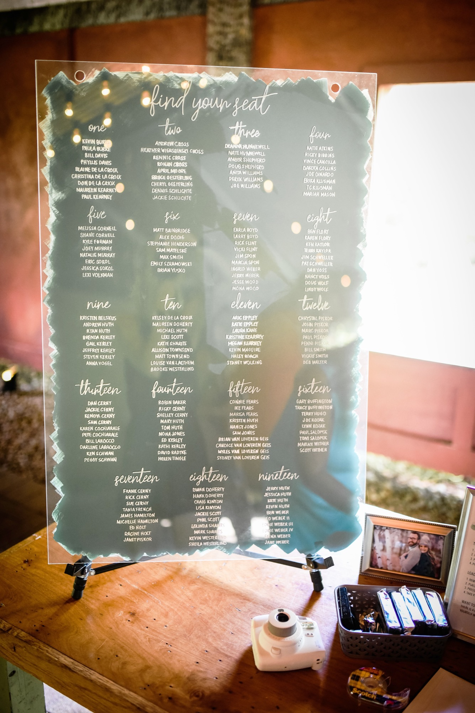
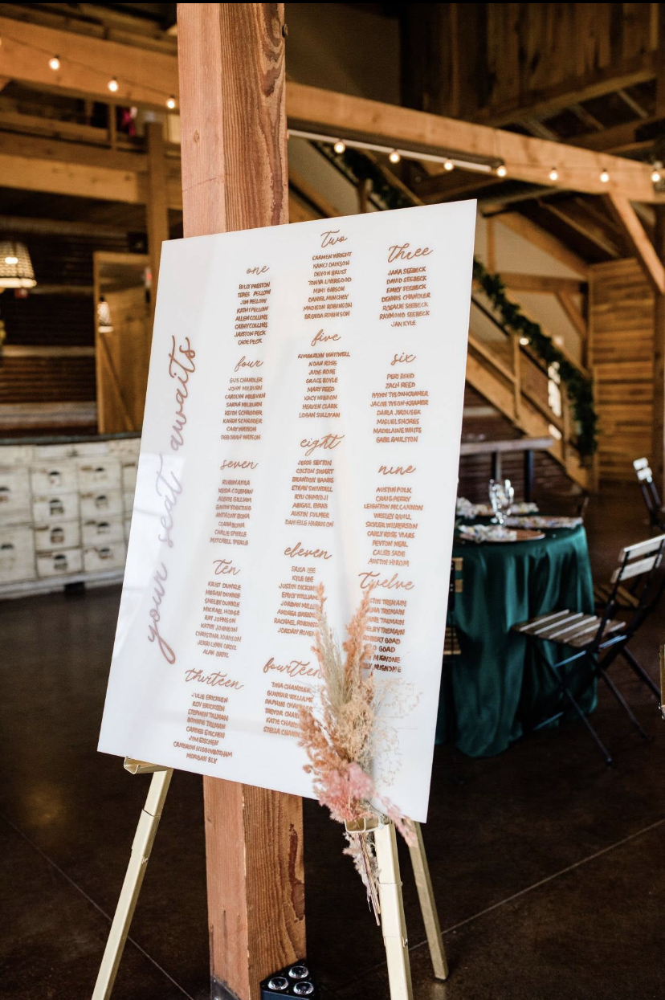
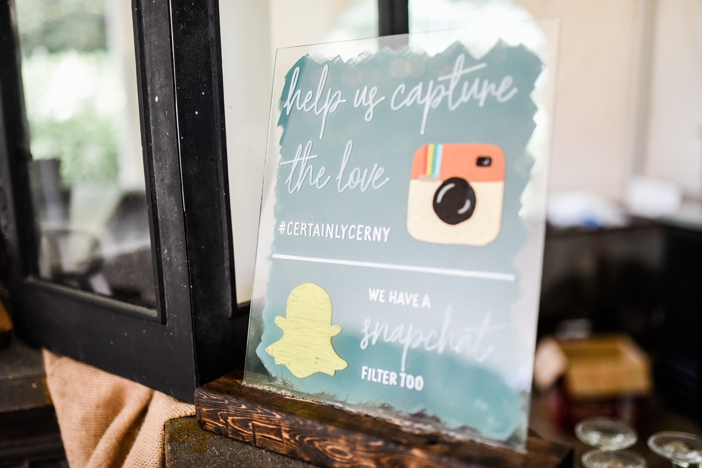
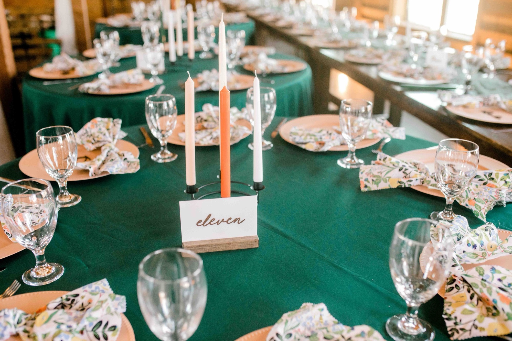
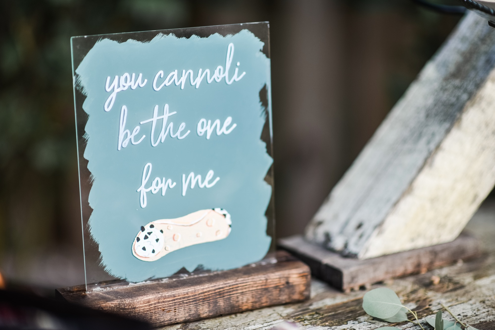
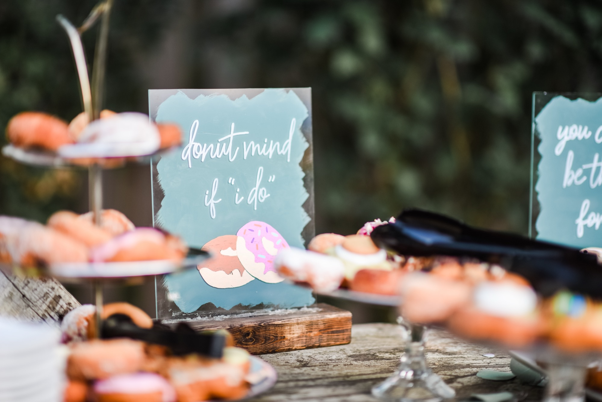
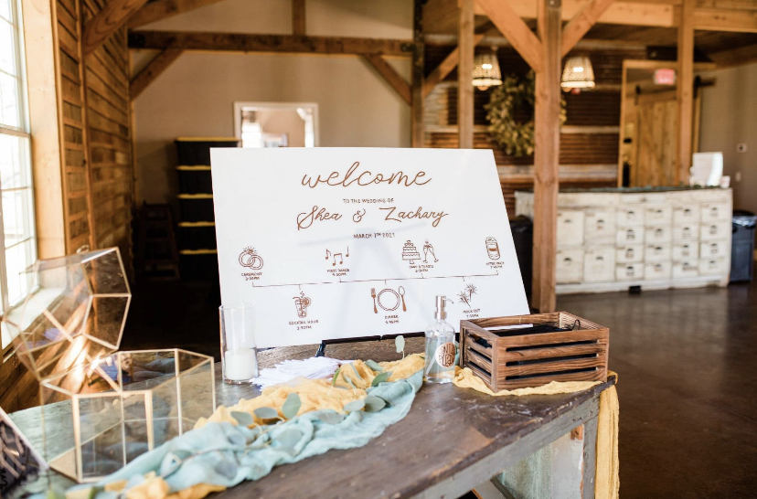

Wedding Signs
Hand Lettering · Wedding Signage
This collection of wedding signs represents a completely custom, handmade product line I designed, created, and sold through my Etsy shop Certainly Cerny. Every sign was hand lettered with acrylic markers on acrylic sheets with painted backgrounds, making each piece totally one of a kind. From seating charts and welcome signs to dessert tables and table numbers, I handled every part of the process from the initial design concept all the way through to the finished product landing in a couple's hands on their wedding day. This is where my love for hand lettering and custom design really comes to life.







